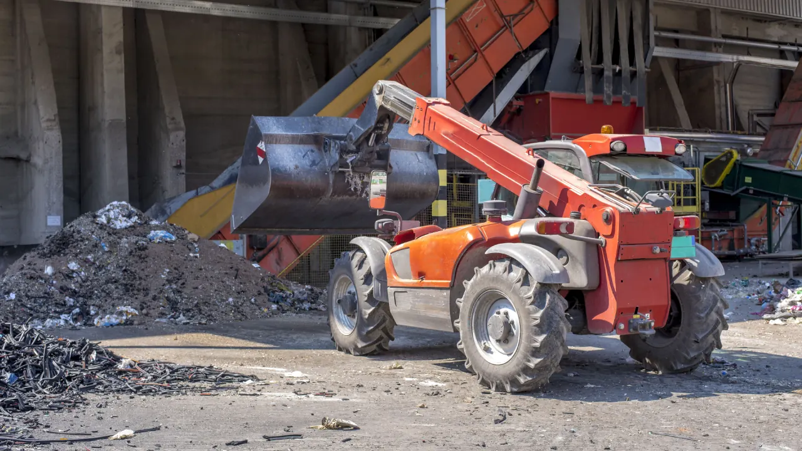

Recent Work Across Southeast Louisiana
This gallery shows real land clearing, tree removal, forestry mulching, and lot preparation work across New Orleans, Metairie, Baton Rouge, and the Northshore. Every job is licensed, insured work backed by a 100% satisfaction guarantee. Free estimates: 504-517-0012.
A look at what our crew has been doing across southeast Louisiana, from a single tree removal to a fully cleared and graded lot.
On the job in southeast Louisiana
What Does Our Land Clearing Work Look Like?
Every project here came off a real job site in southeast Louisiana. Some lots needed one thing done, like a single dead tree taken down. Others needed the full sequence: brush cleared, ground mulched, stumps ground out, the pad graded & leveled, and every scrap of debris hauled off before we left. You'll see tracked mulchers working overgrown acreage, excavators clearing storm-damaged trees, and finished lots ready for a foundation to go in. New Orleans, Metairie, Baton Rouge, and the Northshore all show up in this gallery, because that's where the crew works week to week. If your property looks like any of these before photos, call us: we'll walk it with you.
 On the job
On the job Brush clearing
Brush clearing Tree removal
Tree removal Lot clearing
Lot clearing Lot prepGrading
Lot prepGrading Mulching
Mulching Wrap-up
Wrap-up Debris haul-off
Debris haul-off
Done right The crew
The crewSee Something You Like? Call 504-517-0012
One crew, the right equipment, and a real number up front.
Straight answers